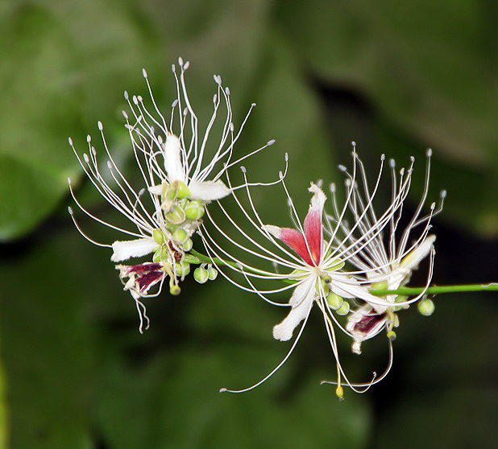
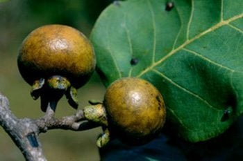
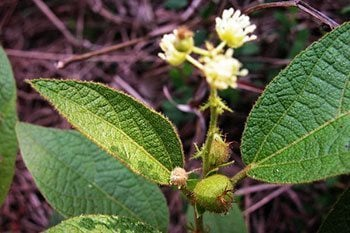
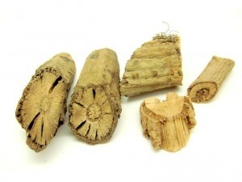

สมุนไพรไทย 22 ชนิดเสี่ยงสูญพันธุ์
พศวัต วัดวิทยาคณ 6404062610146
1.ถั่วดินโคกหรือพิษนาศน์
ชื่อวิทยาศาสตร์: Sophora exigua Craib
ชื่อท้องถิ่น: ถั่วดินโคก (เลย), แผ่นดินเย็น (อุบลราชธานี), นมราชสีห์ พิษนาท (ฉะเชิงเทรา), นมฤาษี
สรรพคุณของต้นพิษนาศน์
- รากพิษนาศน์ สรรพคุณเป็นยาลดไข้ แก้พิษงู รักษาฝี เป็นยาบำรุงน้ำนมสำหรับสตรีหลังคลอดบุตร
- ใบหง้าพิษนาศน์ และใบพิษนาศน์ สรรพคุณรักษาแผลฝี
- ใบพิษนาศน์ สรรพคุณรักษาแผลฝี
- ผลพิษนาศน์ ลักษณะผลเป็นฝัก มีขนสีขาวปกคลุมอยู่ทั่วฝัก

แหล่งที่มา: medthai.com
2.เทพทาโร
ชื่อวิทยาศาสตร์: Cinnamomum porrectum (Roxb.) Kostern
ชื่อท้องถิ่น: ข่าต้น (ภาคกลาง), จะไคต้น, จะไคหอม (ภาคเหนือ), จวง, จวงหอม (ภาคใต้) ,มะแดกกะมางิง (มลายู), หวางจาง (จีน)
สรรพคุณของเทพทาโร
- เปลือกต้นไม้ มีน้ำมันระเหย 1-25 % และแทนนิน แก้ลมจุกเสียด แน่นเฟ้อ แก้ปวดท้อง ขับลมในลำไส้และกระเพาะอาหาร บำรุงธาตุ
- ใบ ใช้ปรุงเป็นยาหอมแก้ลม จุกเสียดแน่นเฟ้อ แก้อาการปวดท้อง ขับผายลมได้ดี ขับลมในลำไส้และกระเพาะอาหารให้เรอ เป็นยาบำรุงธาตุ ขับเสมหะ
- เมล็ด จะให้น้ำมัน ใช้เป็นยาทาถูนวด แก้ปวด

แหล่งที่มา: medthai.com
3.มะตูมนิ่ม
ชื่อวิทยาศาสตร์: Aegle marmelos
ชื่อท้องถิ่น: มะปิน (ภาคเหนือ), หมากตูม(ภาคอีสาน), ทันตาเถร (ภาคใต้)
สรรพคุณของมะตูมนิ่ม
- ผลสุกสามารถนำมาใช้เป็นยาระบายได้
- เปลือกรากและลำต้นจะช่วยแก้อาการไข้จับสั่น
- ใบสดนำมาคั้นเอาน้ำ ใช้แก้หวัด

แหล่งที่มา: medthai.com
4.มะหาด
ชื่อวิทยาศาสตร์: Monkey Jack, Monkey Fruit
ชื่อท้องถิ่น: ปวกหาด (เชียงใหม่), มะหาดใบใหญ่ (ตรัง), หาดขนุน (ภาคเหนือ), ฮัด (ภาคตะวันตกเฉียงเหนือ), หาด (ทั่วไป-ภาคกลาง), เซยาสู้ (กะเหรี่ยง-กำแพง), กาแย ตาแป ตาแปง (มลายู-นราธิวาส), ขนุนป่า
สรรพคุณของมะหาด
- แก่นมะหาดมีรสร้อน มีสรรพคุณเป็นยาแก้กระษัย ละลายเลือด กระจายโลหิต แก้ดวงจิตขุ่นมัว ระส่ำระสาย แก้อาการนอนไม่หลับ เป็นยาแก้ลม
- เปลือกต้นสดนำมาต้มกับน้ำกินเป็นยาแก้ไข้ หรือจะใช้รากสดหรือแห้ง นำมาต้มกับน้ำกินเป็นยาแก้ไข้ก็ได้ (เปลือกต้น,ราก) แก่นมีรสร้อน สรรพคุณเป็นยาแก้ไข้ต่าง ๆ
- รากมะหาดสดหรือแห้งนำมาต้มกับน้ำกินเป็นยาแก้พิษร้อนใน (ราก)

แหล่งที่มา: medthai.com
5.เร่ว
5.1 เร่วน้อย
ชื่อวิทยาศาสตร์: Amomum villosum Lour.
ชื่อท้องถิ่น: เร่ว, เร่วดง
5.2 ใหญ่
ชื่อวิทยาศาสตร์: Amomum xanthioides Wall. ex Baker
ชื่อท้องถิ่น: เร่ว, เร่วกระวาน, กระวานป่า, หมากแหน่ง, มะอี้, หมากอี้, หมากเน็ง
สรรพคุณของเร่ว
- ผลหรือเมล็ดจากผลที่แก่จัดใช้เป็นยาแก้ท้องขึ้น ท้องอืด ท้องเฟ้อ จุกเสียดแน่นท้อง แก้เสมหะในลำคอ
- ช่วยแก้อาการปวดท้อง ด้วยการใช้เมล็ดเร่วผสมกับหัวแห้วหมู ขิงแห้ง และชะเอมเทศ นำมาปรุงเป็นยารับประทาน
- ช่วยแก้เสมหะ

แหล่งที่มา: medthai.com
6.หัวร้อยรู
ชื่อวิทยาศาสตร์: Hydnophytum formicarum Jack
ชื่อท้องถิ่น: ปุ่มฟ้า, ปมเป้า, ปุ่มเป้า, ปุมเป้า หัวร้อยรู (ตราด), กระเช้าผีมด (สุราษฎร์ธานี), ร้อยรู (ปัตตานี), กาฝากหัวเสือ (นราธิวาส), ดาลูบูตาลิมา, ดาลูปูตาลิมา (มลายู-ภาคใต้), หัวร้อยรู (ภาคกลาง), ป่าช้าผีมด (ภาคตะวันออกเฉียงเหนือ)
สรรพคุณของหัวร้อยรู
- ว่านหัวร้อยรูช่วยบำรุงหัวใจ ช่วยขับชีพจร
- ใช้เป็นยารักษาเบาหวาน
- หัวช่วยแก้อาการปวดเข่า แก้ข้อเข่า แก้ข้อเท้าปวดบวม ใช้เป็นยาแก้พิษในข้อกระดูกหรือโรคกระดูกที่มีอาการเจ็บปวด กระดูกเปราะ ผิวหนังเป็นจ้ำ

แหล่งที่มา: medthai.com
7.กระทุ่มนา
ชื่อวิทยาศาสตร์: Mitragyna diversifolia (Wall ex G.Don) Havil.
ชื่อท้องถิ่น: ถ่มพาย (เลย), โทมน้อย (เพชรบูรณ์), กระทุ่มดง (กาญจนบุรี), กาตูม (เขมร-จันทบุรี), ตำ (ส่วย-สุรินทร์), ท่อมนา (สุราษฎร์ธานี), ท่อมขี้หมู (สงขลา), กระท่อมขี้หมู ตุ้มแซะ ตุ้มน้อย ตุ้มน้ำ (ภาคเหนือ), กระทุ่มน้ำ (ภาคกลาง), กระทุ่มหมู, กว้าวตุ้ม, ตู้ม, แซะ
สรรพคุณของกระทุ่มนา
- ใบมีรสขมเฝื่อนเมา มีสรรพคุณช่วยลดความดันโลหิตและออกฤทธิ์กดต่อประสาทและกล้ามเนื้อ
- เป็นยาแก้ท้องร่วง ปวดมวนท้อง ซึ่งมีฤทธิ์เหมือนใบกระท่อม แต่อ่อนกว่า
- เปลือกต้นและใบใช้เป็นยาแก้บิดมูกเลือด

แหล่งที่มา: medthai.com
8.ขันทองพยาบาท
ชื่อวิทยาศาสตร์: Suregada multiflora (A.Juss.) Baill.
ชื่อท้องถิ่น: ยางปลวก ยางปลอก ยายปลวก ฮ่อสะพานควาย (แพร่, น่าน), ทุเรียนป่า ไฟ (ลำปาง), ขุนตาก ข้าวตาก (กาญจนบุรี), ขันทองพยาบาทเครือ ขัณฑสกร ช้องลำพัน สลอดน้ำ (จันทบุรี), มะดูกดง (ปราจีนบุรี), ขันทอง (พิษณุโลก), ดีหมี (พิษณุโลก, อุตรดิตถ์), ขันทองพยาบาท ดูดหิน (สระบุรี), ดูกใส ดูกไทร ดูกไม้ เหมือนโลด (เลย), ดูกไหล (นครราชสีมา), ขนุนดง ขุนดง (หล่มสัก-เพชรบูรณ์), ข้าวตาก ขุนทอง คุณทอง (ประจวบคีรีขันธ์), ขอบนางนั่ง (ตรัง), มะดูกเหลื่อม (ภาคเหนือ), มะดูกเลื่อม (ภาคตะวันตกเฉียงเหนือ), ขันทองพยาบาท มะดูก หมากดูก (ภาคกลาง), กะดูก กระดูก (ภาคใต้), หมากดูด (ไทย), เจิง โจ่ง (ส่วย-สุรินทร์), มะดูกเลี่ยม, เหมือดโรค, ป่าช้าหมอง, ยายปลูก
สรรพคุณของขันทองพยาบาท
- ใช้เป็นยาบำรุงเหงือก ใช้รักษาเหงือกอักเสบ ทำให้ฟันทน เหงือกแข็งแรง
- ช่วยรักษาโรคตับพิการ
- ช่วยฆ่าพยาธิผิวหนัง
- ช่วยถ่ายน้ำเหลืองเสีย
- ช่วยรักษาน้ำเหลืองเสีย

แหล่งที่มา: medthai.com
9.จุกโรหินี
ชื่อวิทยาศาสตร์: Dischidia major (Vahl) Merr.
ชื่อท้องถิ่น: ข้าวฟ่าง (คนเมือง), บวบลม (นครราชสีมา, อุบลราชธานี), พุงปลา (จันทบุรี, ตราด), กล้วยมุสัง (พังงา), จุรูหินี (ชุมพร), กล้วยไม้ (ภาคเหนือ), โกฐพุงปลา จุกโรหินี พุงปลาช่อน (ภาคกลาง), เถาพุงปลา (ระยอง, ภาคตะวันออก), โกฎฐ์พุงปลา (ไทย), นมตำไร (เขมร)
สรรพคุณของจุกโรหินี
- ผลนำมาต้มกับน้ำดื่ม จะช่วยลดระดับน้ำตาลในเลือดได้
- ช่วยแก้หอบหืด
- เช่วยแก้เสมหะผิดปกติ เสมหะพิการ
- ช่วยแก้บิด แก้ปวดเบ่ง มูกเลือด

แหล่งที่มา: medthai.com
10.ชะเอมไทย
ชื่อวิทยาศาสตร์: Albizia myriophylla Benth.
ชื่อท้องถิ่น: ตาลอ้อย (ตราด), อ้อยสามสวน (อุบลราชธานี), ย่านงาย เซเบี๊ยดกาชา (ตรัง), อ้อยช้าง (สงขลา, นราธิวาส), ชะเอมป่า (ภาคกลาง), ส้มป่อยหวาน (ภาคเหนือ), เพาะซูโฟ (กะเหรี่ยงแม่ฮ่องสอน), กอกกั๋น
สรรพคุณของชะเอมไทย
- ช่วยบำรุงกล้ามเนื้อให้เจริญ
- ช่วยแก้โรคตา
- ใบมีรสร้อนและเฝื่อน ช่วยขับโลหิตระดูของสตรี
- ช่วยบรรเทาอาการเจ็บคอ
- ช่วยแก้กำเดาให้เป็นปกติ

แหล่งที่มา: medthai.com
11.ชิงชี่
ชื่อวิทยาศาสตร์: Capparis micracantha DC.
ชื่อท้องถิ่น: หนวดแมวแดง (เชียงใหม่), แส้ม้าทลาย (เชียงราย), ซิซอ (ปราจีนบุรี), คายซู (อุบลราชธานี), น้ำนอง (สุโขทัย), ชายชู้ หมากหมก (ชัยภูมิ), พุงแก (ชัยนาท), ค้อนกลอง (เพชรบูรณ์), ค้อนฆ้อง (สระบุรี), กระดาดป่า[1] กระดาษป่า[2] (ชลบุรี), ราม (สงขลา), พวงมาระดอ เม็งซอ (ปัตตานี), กระดาดขาว กระดาษขาว กระโรกใหญ่ จิงโจ้ พญาจอมปลวก แสมซอ (ภาคกลาง), กิรขี้[2] กินขี้[3] ชิงชี ชิงวี่ ชินซี่ ซาสู่ต้น แซ่สู่ต้น แซ่ม้าลาย แส้ม้าทะลาย น้ำนองหวะ ปู่เจ้าสมิงกุย เป็นต้น
สรรพคุณของชิงชี่
- เมล็ดนำมาคั่วเป็นยาแก้ไอ
- รากและใบใช้เป็นยาแก้หืด
- ช่วยรักษาอาการชาตามร่างกาย
- ใบนำมาเผาสูดเอาควันเป็นยาแก้หลอดลมอักเสบ

แหล่งที่มา: medthai.com
12.ตับเต่า
ชื่อวิทยาศาสตร์: Diospyros ehretioides Wall. ex G. Don
ชื่อท้องถิ่น: ตับเต่า (คนเมือง), มะไฟผี (เชียงราย), มะโกป่า (แพร่), ชิ้นกวาง, เรื้อนกวาง, ลิ้นกวาง (ปราจีนบุรี), ตับเต่าหลวง มะพลับดง (ราชบุรี), มะมัง (นครราชสีมา), ตับเต่าใหญ่ (ชัยภูมิ), เฮื้อนกวาง (ภาคเหนือ, ภาคตะวันออกเฉียงเหนือ), กากะเลา มาเมี้ยง แฮดกวาง (ภาคตะวันออกเฉียงเหนือ) เป็นต้น
สรรพคุณของตับเต่า
- รากใช้ปรุงเป็นยารักษาแผลเรื้อรัง
- เปลือกใช้เป็นยารักษาโรครำมะนาด
- น้ำต้มจากแก่นและรากมีสรรพคุณเป็นยาบำรุงปอด
- แก่นและรากมีรสฝาดเอียนเล็กน้อย ใช้เป็นยาแก้วัณโรค
- เปลือกใช้ปรุงเป็นยาแก้ท้องร่วง

แหล่งที่มา: medthai.com
13.นางแย้มป่า
ชื่อวิทยาศาสตร์: Clerodendrum infortunatum L.
ชื่อท้องถิ่น: หนวดแมวแดง (เชียงใหม่), แส้ม้าทลาย (เชียงราย), ซิซอ (ปราจีนบุรี), คายซู (อุบลราชธานี), น้ำนอง (สุโขทัย), ชายชู้ หมากหมก (ชัยภูมิ), พุงแก (ชัยนาท), ค้อนกลอง (เพชรบูรณ์), ค้อนฆ้อง (สระบุรี), กระดาดป่า[1] กระดาษป่า[2] (ชลบุรี), ราม (สงขลา), พวงมาระดอ เม็งซอ (ปัตตานี), กระดาดขาว กระดาษขาว กระโรกใหญ่ จิงโจ้ พญาจอมปลวก แสมซอ (ภาคกลาง), กิรขี้[2] กินขี้[3] ชิงชี ชิงวี่ ชินซี่ ซาสู่ต้น แซ่สู่ต้น แซ่ม้าลาย แส้ม้าทะลาย น้ำนองหวะ ปู่เจ้าสมิงกุย เป็นต้น
สรรพคุณของนางแย้มป่า
- เมล็ดนำมาคั่วเป็นยาแก้ไอ
- รากและใบใช้เป็นยาแก้หืด
- ช่วยรักษาอาการชาตามร่างกาย
- ใบนำมาเผาสูดเอาควันเป็นยาแก้หลอดลมอักเสบ
แหล่งที่มา: medthai.com
14.ปลาไหลเผือก
ชื่อวิทยาศาสตร์: Eurycoma longifolia Jack.
ชื่อท้องถิ่น: กรุงบาดาล (สุราษฎร์ธานี); คะนาง, ชะนาง (ตราด); ตรึงบาดาล (ปัตตานี); ตุงสอ, แฮพันชั้น (ภาคเหนือ); เพียก (ภาคใต้); หยิกบ่อถองหรือหยิกไม่ถึง, เอียนด่อน (ภาคตะวันออกเฉียงเหนือ); ไหลเผือก (ตรัง);หมุนขึ้น
สรรพคุณของปลาไหลเผือก
- ราก ต้มน้ำดื่ม แก้ไข้ ฝนน้ำดื่ม แก้ปวดท้อง ราก นำไปเข้ายาบำรุงกำลัง
- เปลือกลำต้นนำมาต้มเอาน้ำกินเป็นยาแก้เบาพิการ
- ต้นและรากนำมาต้มกับน้ำหรือแช่ในน้ำ ใช้อาบแก้ผื่นคันที่เกิดจากการแพ้อากาศหรือจากการแพ้สารเคมี
- ใช้รักษาผิวหนังที่เกิดจากการติดเชื้อ
- ช่วยแก้อาการท้องผูก
แหล่งที่มา: medthai.com
15.พังคี
ชื่อวิทยาศาสตร์:Croton crassifolius Geiseler
สรรพคุณของพังคี
- รากใช้เข้ายาแก้ไข้ โดยผสมกับสมุนไพรชนิดอื่นอีก 34 ชนิด ใช้ต้มกับน้ำดื่มแก้ไข้
- รากพังคีช่วยแก้อาการจุกเสียด แก้ท้องอืด ท้องขึ้น ท้องเฟ้อ ปวดท้อง ปวดแน่นท้อง ด้วยการใช้รากต้มกับน้ำดื่ม หรือใช้ภายนอกด้วยการนำมาฝนทาท้อง หรือใช้ฝนกับน้ำปูนใส ผสมกับมหาหิงคุ์และการบูรใช้ทาท้องเด็กอ่อนจะช่วยทำให้ผายลม หรือใช้รากพังคีผสมกับรากส่องฟ้าดงต้มกับน้ำดื่มก็ได้
- รากใช้ตำประคบแก้อาการปวด

แหล่งที่มา: medthai.com
16.มะคังแดง
ชื่อวิทยาศาสตร์:Dioecrescis erythroclada (Kurz) Tirveng.
ชื่อท้องถิ่น: มะคัง (เชียงใหม่), มุยแดง ลุมปุกแดง ลุมพุกแดง (นครราชสีมา), จงก่าขาว ตะลุมพุกแดง (กาญจนบุรี), จงก่าขาว จิ้งก่าขาว ชันยอด (ราชบุรี), มะคังป่า (ภาคเหนือ), ตุมกาแดง (ภาคกลาง), โรคแดง เป็นต้น
สรรพคุณของปลาไหลเผือก
- ราก ต้มน้ำดื่ม แก้ไข้ ฝนน้ำดื่ม แก้ปวดท้อง ราก นำไปเข้ายาบำรุงกำลัง
- เปลือกลำต้นนำมาต้มเอาน้ำกินเป็นยาแก้เบาพิการ
- ต้นและรากนำมาต้มกับน้ำหรือแช่ในน้ำ ใช้อาบแก้ผื่นคันที่เกิดจากการแพ้อากาศหรือจากการแพ้สารเคมี
- ใช้รักษาผิวหนังที่เกิดจากการติดเชื้อ
- ช่วยแก้อาการท้องผูก
แหล่งที่มา: medthai.com
17.สะค้าน
ชื่อวิทยาศาสตร์:Piper ribesoides Wall.
ชื่อท้องถิ่น: ตะค้านเล็ก , ตะค้านหยวก , จะค่าน , จั๊กค่าน , หนาม , มังเหาเจ๊าะ , ผู่แฮเหมาะ
สรรพคุณของสะค้าน
- รสเผ็ดร้อน ขับลมในลำไส้ แก้แน่น
- แก้จุกเสียด บำรุงธาตุ ทำให้ผายเรอ
- ใช้ปรุงยาธาตุ แก้ธาตุพิการ เป็นตัวยาประจำธาตุลม

แหล่งที่มา: medthai.com
18.สารภีป่า
ชื่อวิทยาศาสตร์:Anneslea fragrans Wall.
ชื่อท้องถิ่น: ปันม้า ส้านแดง ส้านใหญ่ สารภี สารภีควาย สารภีหมู สารภีดอย สุน ฮัก (เชียงใหม่), ประดงข้อ (สุโขทัย), แก้มอ้น (ชุมพร), คำโซ่ ตองหนัง ตีนจำ ทำซุง บานมา พระราม โมงนั่ง (ภาคตะวันออกเฉียงเหนือ), ทื่อปลอ (กะเหรี่ยงแม่ฮ่องสอน)
สรรพคุณของสารภีป่า
- ดอกมีสรรพคุณเป็นยาบำรุงหัวใจ
- ใช้เป็นยาถ่ายพยาธิ
- ดอกมีสารช่วยขยายหลอดลม และช่วยขับลม
- เปลือกและดอกมีสรรพคุณเป็นยาแก้บิด

แหล่งที่มา: medthai.com
19.อบเชยไทย
ชื่อวิทยาศาสตร์:Cinnamon, Cassia
ชื่อท้องถิ่น: บอกคอก (ลำปาง), พญาปราบ (นครราชสีมา), สะวง (ปราจีนบุรี), กระดังงา (กาญจนบุรี), ฝักดาบ (พิษณุโลก), สุรามิด (สุโขทัย), กระแจกโมง โมงหอม (ชลบุรี), กระเจียด เจียดกระทังหัน (ยะลา), อบเชยต้น มหาปราบ (ภาคกลาง)
สรรพคุณของอบเชยไทย
- เปลือกต้นใช้ปรุงผสมเป็นยาหอมและยานัตถุ์ ทำให้สดชื่น แก้ปวดศีรษะ แก้อาการอ่อนเพลีย
- รากอบเชยเทศ มีสรรพคุณช่วยปลุกธาตุให้เจริญ แก้พิษร้อน
- ช่วยรักษาแผลในกระเพาะอาหาร
แหล่งที่มา: medthai.com
20.เฉียงพร้านางแอ
ชื่อวิทยาศาสตร์:Carallia brachiata (Lour.) Merr.
ชื่อท้องถิ่น: แก็ก วงคต วงคด องคต (ลำปาง), บงคด (แพร่), นกข่อ ส้มป้อง (เชียงใหม่), ขิงพร้า เขียงพร้า (ตราด, ประจวบคีรีขันธ์), กวางล่าม้า (ภาษาชอง-ตราด), ม่วงมัง หมักมัง (ปราจีนบุรี), โองนั่ง (อุตรดิตถ์), บงมัง (ปราจีนบุรี, อุดรธานี), เขียงพร้านางแอ (ชุมพร), เฉียงพร้า ตะแบง (สุรินทร์), ร่มคมขวาน (กรุงเทพ), สีฟันนางแอง (ภาคเหนือ), ต่อไส้ สันพร้านางแอ (ภาคกลาง), คอแห้ง สีฟัน (ภาคใต้), สะโข่ (กะเหรี่ยงเชียงใหม่), กูมุย (เขมร-สุรินทร์)
สรรพคุณของเฉียงพร้านางแอ
- ลำต้นใช้ต้มน้ำดื่มช่วยบำรุงร่างกาย
- แก่นช่วยขับลม
- ช่วยในการสมานแผล
- ช่วยขับเสมหะและโลหิต ปิดธาตุ

แหล่งที่มา: medthai.com
21.เถาเอ็นอ่อน
ชื่อวิทยาศาสตร์:Cryptolepis dubia (Burm.f.) M.R.Almeida
ชื่อท้องถิ่น: เครือเถาเอ็น เครือเขาเอ็น (เชียงใหม่), เขาควาย (นครราชสีมา), เสน่งกู (บุรีรัมย์), หญ้าลิเลน (ปัตตานี), หมอตีนเป็ด (สุราษฎร์ธานี), ตีนเป็ดเครือ (ภาคเหนือ), เครือเอ็นอ่อน (ภาคอีสาน), เมื่อย (ภาคกลาง), กวน (ฉาน-แม่ฮ่องสอน), นอออหมี (กะเหรี่ยง-แม่ฮ่องสอน), กู่โกวเถิง (จีนกลาง)
สรรพคุณของเถาเอ็นอ่อน
- ราก เถา และใบมีรสขมเบื่อเอียน เป็นยาเย็น มีพิษ ออกฤทธิ์ต่อหัวใจและตับ ใช้เป็นยาฟอกเลือด
- เมล็ดมีรสขมเมา เป็นยาขับลมในลำไส้และในกระเพาะอาหาร ทำให้ผายและเรอ ช่วยแก้อาการจุกเสียดแน่นท้อง
- เถานำมาต้มกินจะช่วยทำให้จิตใจชุ่มชื่น

แหล่งที่มา: medthai.com
22.เปราะหอม
ชื่อวิทยาศาสตร์:Sand ginger, Aromatic ginger, Resurrection lily
ชื่อท้องถิ่น: เปราะหอมขาว เปราะหอมแดง หอมเปราะ (ภาคกลาง), ว่านหอม ว่านแผ่นดินเย็น ว่านตีนดิน (ภาคเหนือ), เปราะ (ภาคใต้), ว่านนกยูง ว่านหาวนอน (เชียงใหม่), ซู (แม่ฮ่องสอน)
สรรพคุณของเปราะหอม
- ช่วยเจริญธาตุไฟ แก้ลงท้อง
- ช่วยขับลม แก้อาการท้องขึ้น ท้องเฟ้อ
- ช่วยแก้เกลื้อนช้าง
- ช่วยรักษาบาดแผล

แหล่งที่มา: medthai.com